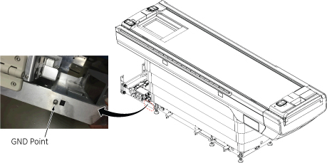

- 00000018WIA30DBFE20GYZ
- id_131064073.7
- Aug 13, 2025 6:08:19 AM
Checking the ground resistance
Prerequisites
| Personnel requirements | |||
|---|---|---|---|
| Required persons | Preliminary requirements | Procedure | Finalization |
| 1 | - | 60 minutes | 5 minutes |
| Tools and test equipment | |||
|---|---|---|---|
| Item | Quantity | Part number | Manufacturer |
| Digital voltmeter (optional) | 1 | - | - |
| Bio-design MG5 Meter (Microguard) with Milliohm Adapter | 1 of any safety analyzer | 46-194427P16 | - |
| Dale 600 or 601 (120 VAC) Safety Analyzer | 46-285647P1 or 46-328406G1 | - | |
| Dale 600E or 601E (220 VAC) Safety Analyzer | 46-285647P14 or 46-328406G2 | - | |
| Fluke ESA612 Electrical Safety Analyzer (220V) | 5453348-2 | - | |
| Brass Master Padlock with Brass Shackle | 2 | 46-194427P320 | - |
| Red Warning LOTO Tag | 2 | 46-194427P322 | - |
| 1 Inch Multi-Locking Device (if multiple service personnel are involved) | 1 | 46-194427P313 | - |
| Consumables | |||
|---|---|---|---|
| Item | Quantity | Part number | Manufacturer |
| Ground Wires | as needed | - | - |
| Safety | ||||
|---|---|---|---|---|
|
Before working in any GE HealthCare MR suite or doing any GE HealthCare service procedure, you must:
If you have any safety concerns at any time, do not begin work or immediately stop work and move to a safe location. Immediately contact your supervisor or site safety officer for instructions on how to proceed. | ||||
| ||||
| ||||
| Required conditions |
|---|
| Any required electrical code inspection |
| Installation of the facility disconnect device |
| EMERGENCY OFF wiring |
| PDU primary wiring |
| PDU subsystem power cables |
| The Power Cable and Ground Cable connection. Refer to Cable Routing and Power/Ground Line Connection . |
| No hard wired signal cables connected to any subsystem cabinets. Fiber Optic cables may be connected and not impact this check. |
| Ground cable of Patient Table is connected before Ground resistance check for Patient Table. |
About this task
Ground Resistance Checks are required on every site. Ground Leakage Test is only performed when local regulation or code requires it.
Ground Resistance Checks are required for the following cabinets.
- ISC GND - Host GOC Cabinet (Performed after Power and Ground cable connection)
- ISC GND - ICC (Performed after Power and Ground cable connection)
- ISC GND - Patient Table (Performed after Patient Table Installation)
DANGER 
Procedure
Ensure that no power is applied to the Main Disconnect Panel (MDP). See Applying LOTO - Main Disconnect Panel (MDP).DANGER 
Ground Resistance Checks Using Microguard
Procedure
- Connect the milliohm adaptor module into the power outlet of the Microguard.
Figure 1. Microguard Connections  Note Since the Microguard is being used solely as a voltmeter in this application, any other meter capable of resolving 0.1 millivolts can be substituted in the next step. Meters other than the Microguard are currently in use. Refer to the appropriate tool catalog for further information.
Note Since the Microguard is being used solely as a voltmeter in this application, any other meter capable of resolving 0.1 millivolts can be substituted in the next step. Meters other than the Microguard are currently in use. Refer to the appropriate tool catalog for further information.
Access the ground point of patient table.DANGER Figure 3. Ground point 
Finalization
- Remove MDP LOTO. See Removing LOTO - Main Disconnect Panel (MDP).
- Do a check scan. See Doing a check scan.
Ground Resistance Checks Using Dale (For sites equipped with a Dale 600, 600E, 601, or 601E Safety Analyzer)
Procedure
- Connect one clamp-type lead to the EXTERNAL jack on the top of the Dale safety analyzer. Connect the other clamp-type lead to the CHASSIS jack on the top of the Dale safety analyzer.
Figure 4. Top of Dale Safety Analyzer 
- On the Dale safety analyzer, set the main selector switch to W - RESISTANCE.
Figure 5. Dale Safety Analyzer 
- Plug the Dale safety analyzer into an AC outlet.
Figure 6. Dale Safety Analyzer Connections  Note The Dale safety analyzer reads resistance in ohms. For example, a reading of 0.50 equals 500 milliohms.
Note The Dale safety analyzer reads resistance in ohms. For example, a reading of 0.50 equals 500 milliohms.
Finalization
- Remove MDP LOTO. See Removing LOTO - Main Disconnect Panel (MDP).
- Do a check scan. See Doing a check scan.
Ground Resistance Checks Using Fluke ESA612
Procedure
- Turn on the Fluke meter and select the point to point option on the meter.Note At facilities with 110-120 VAC, a fault error may appear when the meter is powered on. Press F4 OK to clear the error and continue.
Figure 9. Fluke ESA612 Safety Analyzer 
Finalization
- Remove MDP LOTO. See Removing LOTO - Main Disconnect Panel (MDP).
- Do a check scan. See Doing a check scan.